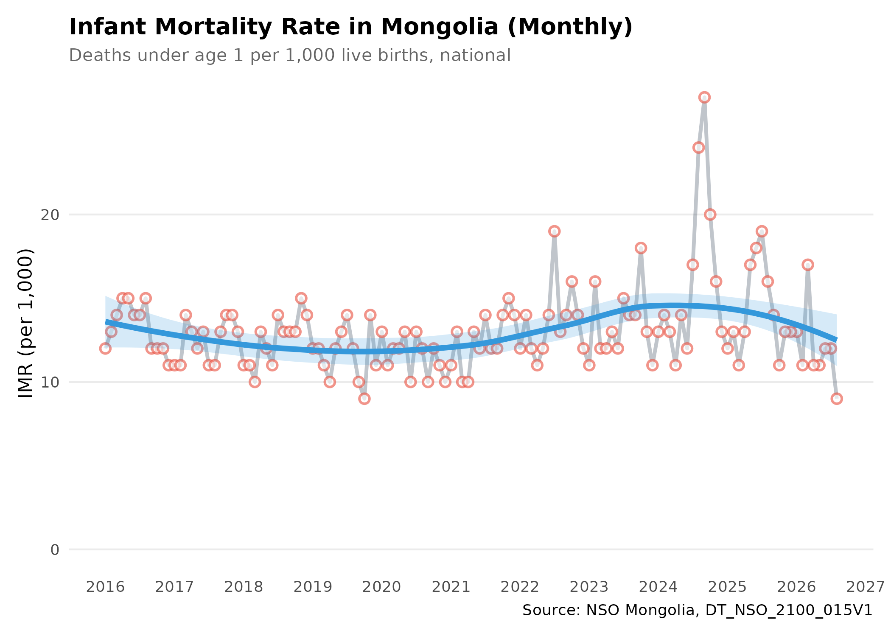
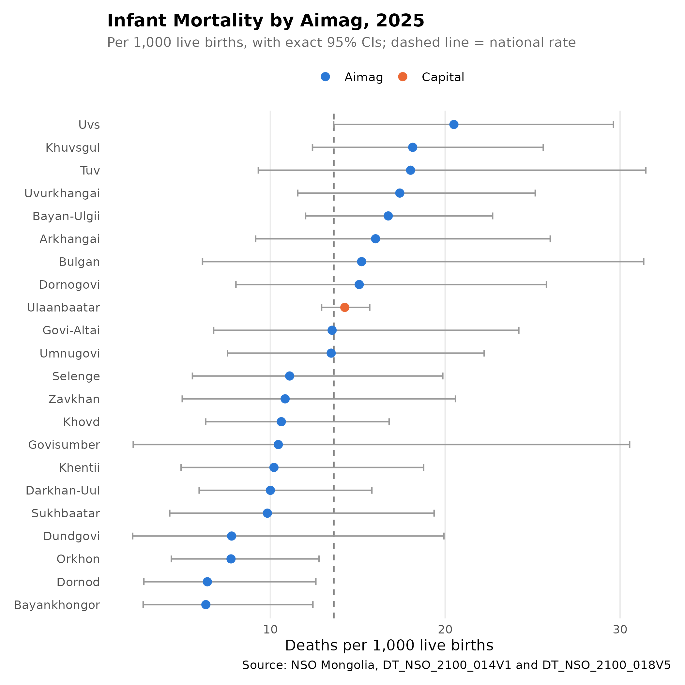
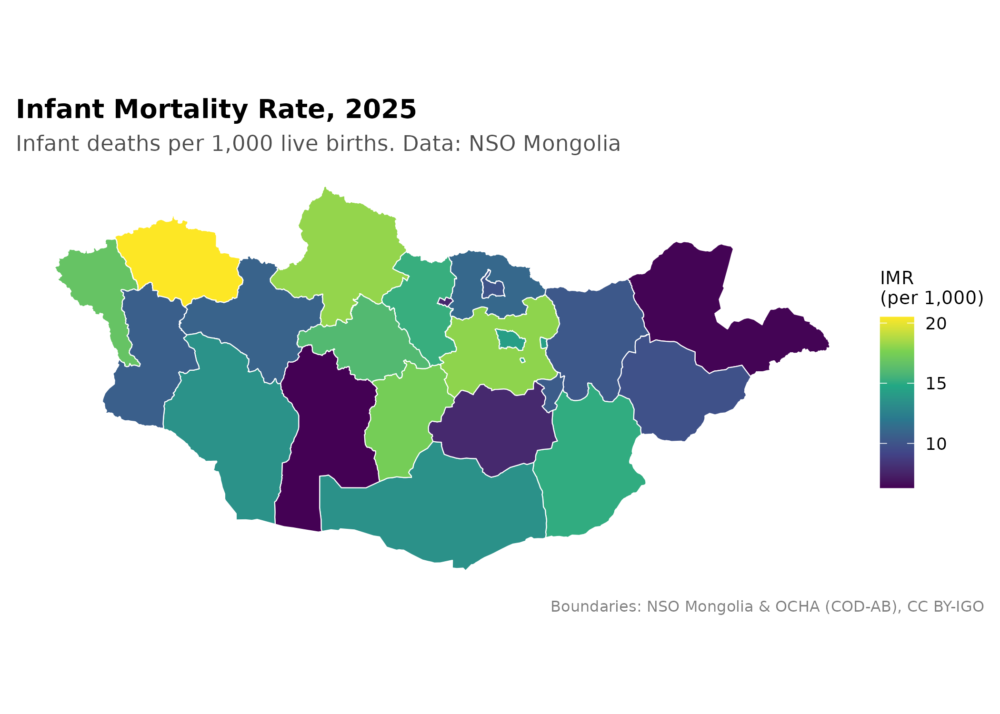

Installation
Install mongolstats, and mongolmaps for the maps, from GitHub:
# install.packages("pak")
# pak::pak("temuulene/mongolstats")
# pak::pak("temuulene/mongolmaps")Your First Analysis: Infant Mortality
This walk-through uses the infant mortality rate (IMR), a key indicator of population health and health system performance. It covers the full workflow: find a table, check its structure, fetch data, calculate rates, and map them.
Step 1: Load Packages
library(mongolstats)
library(mongolmaps)
library(dplyr)
library(ggplot2)
# Set language to English for readable output
nso_options(mongolstats.lang = "en")
# Set global ggplot2 theme with proper margins to prevent text cutoff
theme_set(
theme_minimal(base_size = 11) +
theme(
plot.margin = margin(10, 10, 10, 10),
plot.title = element_text(size = 13, face = "bold"),
plot.subtitle = element_text(size = 10, color = "grey40"),
legend.text = element_text(size = 9),
legend.title = element_text(size = 10)
)
)Step 2: Find the Right Table
Search the catalogue by keyword:
mortality_tables <- nso_itms_search("infant mortality")
mortality_tables |>
distinct(tbl_id, tbl_eng_nm)
#> # A tibble: 8 × 2
#> tbl_id tbl_eng_nm
#> <chr> <chr>
#> 1 DT_NSO_2100_014V1 NUMBER OF INFANT MORTALITY, aimags and the Capital and by m…
#> 2 DT_NSO_2100_014V2 NUMBER OF INFANT MORTALITY, by soum and discrict, and by ye…
#> 3 DT_NSO_2100_014V4 INFANT MORTALITY, by sex, by soum, and by year
#> 4 DT_NSO_2100_014V5 INFANT MORTALITY RATE, per 1000 live births, by sex, by sou…
#> 5 DT_NSO_2100_015V1 INFANT MORTALITY RATE, per 1000 live births, aimags and the…
#> 6 DT_NSO_2100_015V2 INFANT MORTALITY, per 1000 live births, by soum, and by year
#> 7 DT_NSO_2100_015V2 INFANT MORTALITY, per 1000 live births, by year
#> 8 DT_NSO_2800_019V1 INFANT MORTALITY RATE PER 1000 LIVE BIRTHSNSO publishes both rates (per 1,000 live births) and
the counts behind them (infant deaths). We start with
the monthly rate table, DT_NSO_2100_015V1, and later use
the counts to compare aimags.
Step 3: Explore Table Metadata
Before fetching data, check which dimensions the table has:
# View table structure
meta <- nso_table_meta("DT_NSO_2100_015V1")
meta
#> # A tibble: 2 × 5
#> dim code is_time n_values codes
#> <chr> <chr> <lgl> <int> <list>
#> 1 Region Бүс FALSE 28 <tibble [28 × 3]>
#> 2 Month Сар FALSE 128 <tibble [128 × 3]>
# Month labels are "YYYY-MM"; the codes behind them are not in date order
months <- nso_dim_values("DT_NSO_2100_015V1", "Month", labels = "en")
head(months)
#> # A tibble: 6 × 2
#> code label_en
#> <chr> <chr>
#> 1 0 2026-08
#> 2 1 2026-07
#> 3 2 2026-06
#> 4 3 2026-05
#> 5 4 2026-04
#> 6 5 2026-03
range(months$label_en)
#> [1] "2016-01" "2026-08"Step 4: Fetch Data
Get the national rate for every month NSO publishes:
imr_national <- nso_data(
tbl_id = "DT_NSO_2100_015V1",
selections = list(
Region = "0", # national total
Month = months$code
),
labels = "en" # add English label columns
)
imr_national |>
arrange(Month_en) |>
head(10)
#> # A tibble: 10 × 5
#> Region Month value Region_en Month_en
#> <chr> <chr> <dbl> <chr> <chr>
#> 1 0 13 12 Total 2016-01
#> 2 0 14 13 Total 2016-02
#> 3 0 15 14 Total 2016-03
#> 4 0 16 15 Total 2016-04
#> 5 0 17 15 Total 2016-05
#> 6 0 18 14 Total 2016-06
#> 7 0 19 14 Total 2016-07
#> 8 0 20 15 Total 2016-08
#> 9 0 21 12 Total 2016-09
#> 10 0 22 12 Total 2016-10NSO rounds these monthly rates to whole numbers, which is coarse for a measure that sits around 10 to 20 per 1,000.
Step 5: Visualize the Trend
imr_national |>
mutate(date = as.Date(paste0(Month_en, "-01"))) |> # "YYYY-MM" to Date
ggplot(aes(x = date, y = value)) +
geom_line(color = "#2c3e50", linewidth = 1, alpha = 0.3) + # dim raw data so trend stands out
geom_point(color = "#e74c3c", size = 2, shape = 21, fill = "white", stroke = 1, alpha = 0.6) +
# LOESS reveals the trend through month-to-month noise
geom_smooth(
method = "loess", formula = y ~ x, se = TRUE,
color = "#3498db", fill = "#3498db", alpha = 0.2, linewidth = 1.5
) +
scale_x_date(date_breaks = "1 year", date_labels = "%Y") +
scale_y_continuous(limits = c(0, NA)) +
labs(
title = "Infant Mortality Rate in Mongolia (Monthly)",
subtitle = "Deaths under age 1 per 1,000 live births, national",
x = NULL,
y = "IMR (per 1,000)",
caption = "Source: NSO Mongolia, DT_NSO_2100_015V1"
) +
theme(
panel.grid.minor = element_blank(),
panel.grid.major.x = element_blank() # vertical gridlines clutter time series
)
Regional Comparison
To compare aimags over a year, do not average the 12 monthly rates. A mean of monthly rates gives a month with few births the same weight as a busy month, and NSO’s rounding makes small aimags’ monthly rates jump between values. Instead, add up the infant deaths and the live births for the year, then divide:
The counts come from two monthly tables: infant deaths
(DT_NSO_2100_014V1) and live births
(DT_NSO_2100_018V5).
# Sum a monthly count table over one calendar year, for every region code
annual_counts <- function(tbl, year) {
months <- nso_dim_values(tbl, "Month", labels = "en")
nso_data(
tbl_id = tbl,
selections = list(
Region = nso_dim_values(tbl, "Region")$code,
Month = months$code[startsWith(months$label_en, year)]
),
labels = "en"
) |>
summarise(count = sum(value), n_months = n(), .by = c(Region, Region_en))
}
# Latest year with all 12 months published
birth_months <- nso_dim_values("DT_NSO_2100_018V5", "Month", labels = "en")$label_en
latest_year <- names(which(table(substr(birth_months, 1, 4)) == 12)) |> max()
infant_deaths <- annual_counts("DT_NSO_2100_014V1", latest_year)
live_births <- annual_counts("DT_NSO_2100_018V5", latest_year)
imr_regional <- infant_deaths |>
select(Region, Region_en, deaths = count) |>
inner_join(select(live_births, Region, births = count), by = join_by(Region)) |>
mutate(
Region_en = trimws(Region_en),
level = case_when(
Region == "0" ~ "National",
Region %in% c("1", "2", "3", "4") ~ "Region",
# Ulaanbaatar's figures sit under code "5"; code "511" is an empty duplicate
Region == "5" ~ "Capital",
Region == "511" ~ "Duplicate",
.default = "Aimag"
),
imr = deaths / births * 1000,
# Exact Poisson 95% confidence interval for the rate
lower = qchisq(0.025, 2 * deaths) / 2 / births * 1000,
upper = qchisq(0.975, 2 * (deaths + 1)) / 2 / births * 1000
)
national_imr <- imr_regional$imr[imr_regional$level == "National"]
imr_units <- imr_regional |>
filter(level %in% c("Aimag", "Capital"))
# Highest rates
imr_units |>
arrange(desc(imr)) |>
select(Region_en, deaths, births, imr, lower, upper) |>
head(10)
#> # A tibble: 10 × 6
#> Region_en deaths births imr lower upper
#> <chr> <dbl> <dbl> <dbl> <dbl> <dbl>
#> 1 Uvs 28 1366 20.5 13.6 29.6
#> 2 Khuvsgul 32 1764 18.1 12.4 25.6
#> 3 Tuv 12 666 18.0 9.31 31.5
#> 4 Uvurkhangai 28 1609 17.4 11.6 25.2
#> 5 Bayan-Ulgii 41 2449 16.7 12.0 22.7
#> 6 Arkhangai 16 999 16.0 9.15 26.0
#> 7 Bulgan 7 460 15.2 6.12 31.4
#> 8 Dornogovi 13 862 15.1 8.03 25.8
#> 9 Ulaanbaatar 423 29671 14.3 12.9 15.7
#> 10 Govi-Altai 11 813 13.5 6.75 24.2In 2025, the national IMR was 13.6 per 1,000 live births. Many aimags record only a few dozen infant deaths a year, so their rates come with wide confidence intervals.
Visualize Regional Differences
imr_units |>
mutate(Region_en = forcats::fct_reorder(Region_en, imr)) |> # order by rate, not alphabet
ggplot(aes(x = imr, y = Region_en)) +
geom_vline(xintercept = national_imr, linetype = "dashed", color = "grey50") +
geom_errorbar(aes(xmin = lower, xmax = upper), width = 0.3, color = "grey60", orientation = "y") +
geom_point(aes(color = level), size = 2.5) +
scale_color_manual(values = c(Aimag = "#2a78d6", Capital = "#eb6834"), name = NULL) +
labs(
title = paste0("Infant Mortality by Aimag, ", latest_year),
subtitle = "Per 1,000 live births, with exact 95% CIs; dashed line = national rate",
x = "Deaths per 1,000 live births",
y = NULL,
caption = "Source: NSO Mongolia, DT_NSO_2100_014V1 and DT_NSO_2100_018V5"
) +
theme(
panel.grid.major.y = element_blank(),
panel.grid.minor = element_blank(),
legend.position = "top"
)
Where an interval crosses the dashed line, that aimag’s rate is consistent with the national rate. Infant deaths and births are counted where they are recorded, so referrals of high-risk births to hospitals in Ulaanbaatar can raise the capital’s rate and lower the rate of the aimag the mother came from.
Adding Geographic Context
mongolmaps
provides boundaries that carry NSO codes, so the Region
column joins without matching names.
imr_map <- imr_units |>
# mongolmaps knows Ulaanbaatar by its aimag-level code "511"
mutate(Region = if_else(Region == "5", "511", Region)) |>
mn_join(by = "Region", level = "aimag")
mn_map(
imr_map,
fill = imr,
title = paste0("Infant Mortality Rate, ", latest_year)
) +
labs(subtitle = "Infant deaths per 1,000 live births. Data: NSO Mongolia", fill = "IMR\n(per 1,000)")
The map shows point estimates only. Read it with the confidence intervals above: in small aimags, a few more or fewer infant deaths can move the colour a long way.
Key Functions Summary
| Function | Purpose | Example |
|---|---|---|
nso_itms_search() |
Find tables by keyword | nso_itms_search("mortality") |
nso_table_meta() |
Get table dimensions | nso_table_meta("DT_NSO_...") |
nso_dim_values() |
List dimension values | nso_dim_values(tbl, "Region") |
nso_table_periods() |
Check time coverage | nso_table_periods(tbl) |
nso_data() |
Fetch data | nso_data(tbl, selections, labels) |
mongolmaps::mn_join() |
Join NSO data to boundaries by code | mn_join(data, by = "Region", level = "aimag") |
mongolmaps::mn_map() |
Quick map of joined data | mn_map(joined, fill = value) |
Best Practices
-
Use codes in scripts, labels for display:
Selections accept codes or labels, but codes are more stable.
labels = "en"adds readable label columns alongside the codes. -
Check metadata first: Use
nso_table_meta()andnso_dim_values()to see dimensions and codes before fetching. -
Separate the levels: Region columns mix the
national total (
"0"), regions ("1"–"4"), the capital ("5"), and aimags. Filter to one level before summing or ranking, or you will count deaths twice. - Build rates from counts: Add up numerators and denominators over the period, then divide. Do not average monthly rates.
- Show uncertainty: Small populations give unstable rates. Report confidence intervals, or pool several years.
-
Join by code: Use
mongolmaps::mn_join()on theRegioncode column rather than matching names.
Common Workflows
Next Steps
- Discover More Data: See the Discovery Guide for advanced search techniques
- Create Maps: Learn spatial analysis in the Mapping Guide
- Reference: Browse all functions in the Reference
Quick Reference: Common Health Tables
| Indicator | Table_ID | Measure | Detail |
|---|---|---|---|
| Infant mortality rate | DT_NSO_2100_015V1 | Rate per 1,000 live births | Aimag, month |
| Infant deaths | DT_NSO_2100_014V1 | Count | Aimag, month |
| Live births | DT_NSO_2100_018V5 | Count | Aimag, month |
| Under-5 mortality rate | DT_NSO_2100_030V2 | Rate per 1,000 live births | Aimag, month |
| Maternal deaths | DT_NSO_2100_002V2 | Count | Aimag, month |
| Deaths by leading cause | DT_NSO_2100_027V1 | Count | Soum, year |
| Cancer incidence | DT_NSO_2100_012V1 | Rate per 10,000 population | Cancer type, year |
| Communicable disease cases (incl. tuberculosis) | DT_NSO_2100_035V1 | Count | Disease, month |
| Communicable disease cases | DT_NSO_2100_020V2 | Count | Disease, soum, year |
| Mid-year population | DT_NSO_0300_002V1 | Count | Aimag, year |